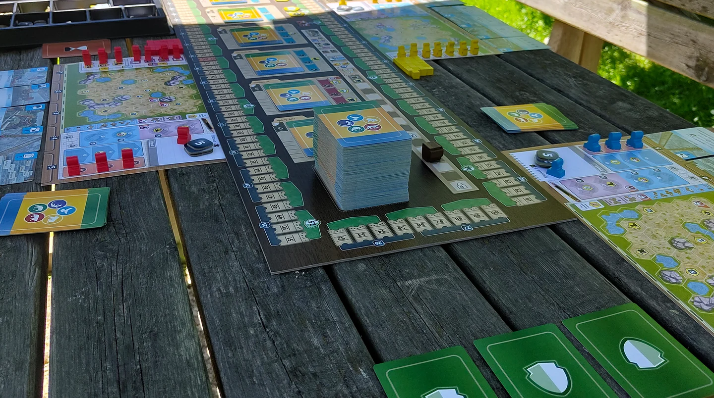
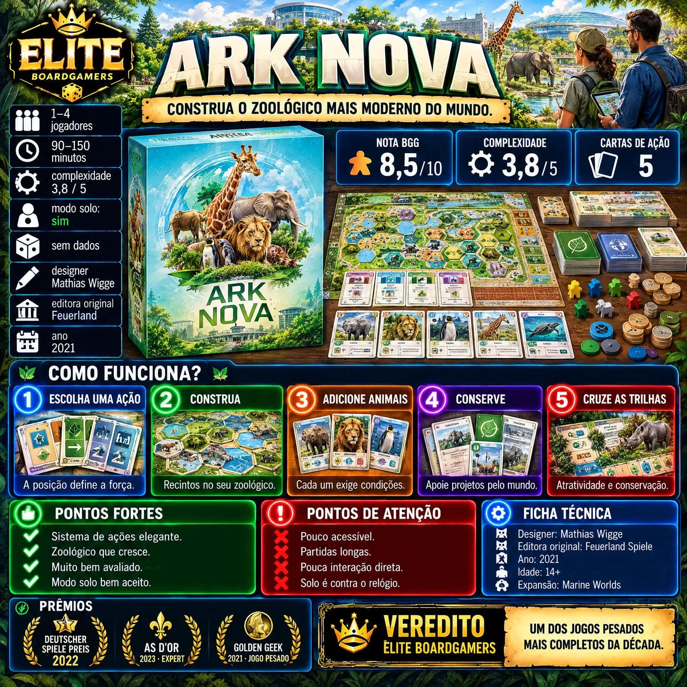
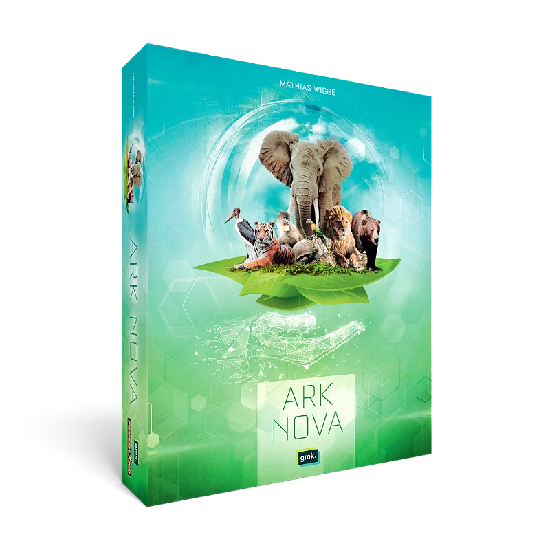

Resumo em 30 segundos
Um zoológico inteiro, uma carta de cada vez.
Destaques
- Sistema de ações elegante
- Zoológico que cresce
- Combinações satisfatórias
Atenção
- Pouco acessível
- Partidas longas
- Pouca interação direta
3 vitórias em prêmios, incluindo As d'Or 2023 · Jeu de l’année Expert
Para quem: gosta de jogos pesados de motor de cartas; joga sozinho ou em dupla com frequência.
Como funciona Ark Nova
Gire as cinco cartas de ação para montar o zoológico mais atrativo e mais engajado na conservação.
- 1
Escolha uma carta
Na sua vez, use uma das cinco cartas de ação: construir, animais, cartas, associação ou patrocinadores.
- 2
Força pela posição
Quanto mais à direita estiver a carta, mais forte a ação. Usada, ela volta para o começo da fila.
- 3
Monte o zoológico
Construa recintos e coloque animais que exigem espaço, dinheiro e às vezes ícones já presentes no zoo.
- 4
Apoie a conservação
Mande trabalhadores à associação para ganhar parcerias e apoiar projetos de conservação pelo mundo inteiro.
- 5
Cruze as trilhas
Atratividade e conservação correm em sentidos opostos; quando se cruzam, o fim da partida é disparado.
Ler as regras completas
Cada jogador tem um tabuleiro de zoológico e cinco cartas de ação em fila: construir, animais, cartas, associação e patrocinadores. A força de cada ação depende da posição da carta na fila: quanto mais à direita, mais forte. Depois de usada, ela volta para o início e as outras avançam.
Com a ação de construir, você ergue recintos de tamanhos variados e prédios especiais no seu tabuleiro. Com a de animais, coloca nos recintos os animais das cartas, que exigem tamanho de recinto, dinheiro e às vezes outras condições, como ícones de continente ou de ciência já presentes no zoológico.
A ação de cartas compra cartas novas do baralho ou da vitrine; a de associação manda trabalhadores para ganhar reputação, fazer parcerias com zoológicos e universidades ou apoiar projetos de conservação; a de patrocinadores joga cartas que trazem renda e efeitos permanentes.
Cada carta de ação pode ser melhorada uma vez, ganhando um efeito mais forte. E cada animal, patrocinador ou prédio pode criar combinações, como um ornitólogo que rende dinheiro sempre que um pássaro chega ao zoológico.
Há duas trilhas que correm em sentidos opostos: atratividade, que traz visitantes e renda, e conservação, alimentada pelos projetos. Quando os marcadores de um jogador se cruzam, o fim é disparado, e vence quem tiver a maior distância entre eles.
Como é jogar Ark Nova
“Um dos melhores eurogames pesados feitos nos últimos dez anos.”
Let's Play Games (tradução livre)

A Let's Play Games dá um exemplo: a sua carta de construir ficou vários turnos na ponta direita da fila e agora é a ação mais forte que você tem. Você a usa para erguer um recinto grande, onde no próximo turno vai caber o elefante da sua mão. A carta volta para a esquerda, fraca, e as outras avançam: o turno seguinte já precisa ser planejado com outra ação.
Continuar lendo
O começo é de preparação, pagando para montar recintos e esperando o dinheiro; no meio, as combinações aparecem, como o ornitólogo que rende dinheiro a cada pássaro, citado pela Tabletop Gaming. A Let's Play Games o chama de um dos melhores eurogames pesados dos últimos dez anos, mas avisa que a primeira partida a quatro passou de quatro horas.
O que funciona muito bem
Sistema de ações elegante
Por quê?As cinco cartas de ação que ganham força conforme a posição são o centro do jogo, descrito pela Wikipedia como seu mecanismo principal. Esperar uma ação ficar forte ou usá-la fraca agora é uma decisão a cada turno.
Zoológico que cresce
Por quê?Montar recintos, animais, patrocinadores e projetos de conservação dá a sensação de construir algo que é seu, e o tabuleiro termina cheio de histórias. A Tabletop Gaming considera o jogo obrigatório e diz que ele faz jus à fama.
Combinações satisfatórias
Por quê?As 212 cartas criam muitas combinações, como o ornitólogo que rende dinheiro sempre que um pássaro chega ao zoológico, exemplo da Tabletop Gaming. Descobrir uma sequência que dispara vários efeitos é o ponto alto de cada partida.
Ótimo a dois
Por quê?A Let's Play Games considera o jogo melhor a dois, com partidas mais apertadas e disputa mais afiada pelas cartas e projetos. A três, o mercado de cartas gira rápido e também funciona bem.
Solo bem aceito
Por quê?Numa enquete do BGG com 1.530 votos, 80% aprovaram o modo solo, que desafia o jogador a cruzar as trilhas num número limite de rodadas. O jogo também ficou em 3º no Golden Geek de solo em 2021.
Muito bem avaliado
Por quê?Tem nota 8,5 no BGG, e uma das fontes o coloca em 2º lugar geral do site. A Let's Play Games diz que o jogo merece a reputação, e os prêmios na Alemanha e na França confirmam.
Pontos de atenção
Pouco acessível Moderada
Por quê?A Wikipedia resume que as críticas se concentram na acessibilidade para iniciantes, e a Let's Play Games lembra que a iconografia é densa: nas primeiras partidas, todos consultam o cartão de referência o tempo todo.
Partidas longas Moderada
Por quê?A caixa diz 90 a 150 minutos, mas a Let's Play Games relata quase cinco horas na primeira partida com quatro jogadores novos, e trata o tempo da caixa como meta para grupos experientes.
Pouca interação direta Moderada
Por quê?Uma resenha no BGG chama o jogo de cabeça baixa, cada um no seu zoológico. A disputa existe nas cartas da vitrine e nos projetos de conservação, que a Let's Play Games diz frustrarem quando um rival chega antes.
Cartas que não chegam Leve
Por quê?Com 212 cartas no baralho, a Tabletop Gaming aponta que você pode esperar por cartas que nunca chegam, e muitos animais exigem condições que o zoológico ainda não tem. Isso frustra novatos no começo.
Componentes desiguais Leve
Por quê?A Tabletop Gaming critica os tabuleiros finos, os dois marcadores de trilha quase idênticos e a disposição confusa dos ícones nas cartas, além das fotos de animais, que considera infantis para um jogo de 14 anos ou mais.
Solo é contra o relógio Leve
Por quê?Uma resenha no BGG descreve o modo solo como um cronômetro sofisticado, sem rival de verdade: você corre contra um limite de rodadas. Quem prefere um adversário automatizado pode sentir falta.
Infográfico para o Instagram
A resenha inteira em uma imagem: salve na galeria ou copie a legenda pronta.

Não colou? Toque em “Compartilhar legenda” e escolha “Copiar”, ou segure o dedo no texto acima.
Para quem é
Perfil do jogo
Com quantos jogar
- SozinhoBom
Corrida contra um limite de rodadas; 80% de aprovação numa enquete do BGG com 1.530 votos.
- 2 jogadoresÓtimo
O número ideal para a Let's Play Games: partidas mais apertadas e disputa afiada por cartas.
- 3 jogadoresBom
Funciona bem, com o mercado de cartas girando rápido entre os turnos.
- 4 jogadoresFraco
Ainda bom, mas a partida se estende e a disputa por projetos de conservação fica mais acirrada.
- Sozinho: Corrida contra um limite de rodadas; 80% de aprovação numa enquete do BGG com 1.530 votos.
- 2 jogadores: O número ideal para a Let's Play Games: partidas mais apertadas e disputa afiada por cartas.
- 3 jogadores: Funciona bem, com o mercado de cartas girando rápido entre os turnos.
- 4 jogadores: Ainda bom, mas a partida se estende e a disputa por projetos de conservação fica mais acirrada.
É para você se…
- Gosta de jogos pesados de motor de cartas
- Joga sozinho ou em dupla com frequência
- Tem tempo para partidas longas
- Gosta de planejar combinações a longo prazo
- Tem alguém experiente para ensinar
Pense duas vezes se…
- Está começando nos jogos modernos
- Quer muita interação entre jogadores
- Prefere partidas curtas
- Não tem paciência para ícones e cartão de referência
- Joga quase sempre com quatro pessoas
Dica para a primeira partida
Reserve uma tarde: a Let's Play Games levou quase cinco horas na primeira partida a quatro. Use o lado padrão dos tabuleiros de zoológico, porque o alternativo acrescenta restrições de planejamento, e deixe o cartão de referência de ícones à mão. Dica prática: explique primeiro o giro das cartas de ação com um exemplo e só depois os detalhes de cada ação; ter alguém experiente ensinando ajuda muito.
Edição nacional e preço
R$ 450 a R$ 500

A Grok Games publica Ark Nova em português. Em 27/10/2026, as lojas consultadas vendiam o jogo entre R$ 450 (no Pix) e R$ 500, com estoque baixo ou esgotado em algumas delas; no Mercado Livre havia oferta por cerca de R$ 480.
Expansões e versões
A expansão Marine Worlds acrescenta animais marinhos, aquários e novos projetos de conservação. Há também uma versão digital oficial de Ark Nova na Steam, para quem quer aprender as regras com o computador fazendo as contas.
Se você gosta de Ark Nova…
 Terraforming MarsOutro motor de cartas premiado, um pouco mais leve segundo a Let's Play Games, com Marte no lugar do zoológico e muitas combinações.Ler a resenha →
Terraforming MarsOutro motor de cartas premiado, um pouco mais leve segundo a Let's Play Games, com Marte no lugar do zoológico e muitas combinações.Ler a resenha → WingspanTambém é sobre animais e motor de cartas, mas bem mais leve, curto e acessível, com aves e partidas de cerca de uma hora.Ler a resenha →
WingspanTambém é sobre animais e motor de cartas, mas bem mais leve, curto e acessível, com aves e partidas de cerca de uma hora.Ler a resenha → GloomhavenPara quem gosta de jogos pesados e longos, mas quer cooperar: combate tático em campanha, com outra espécie de quebra-cabeça.Ler a resenha →
GloomhavenPara quem gosta de jogos pesados e longos, mas quer cooperar: combate tático em campanha, com outra espécie de quebra-cabeça.Ler a resenha →
Veredito: Ark Nova vale a pena?
Recomendado para público específicoArk Nova é um dos jogos pesados mais completos da última década: o giro das cinco cartas de ação é elegante, as 212 cartas criam combinações satisfatórias e o zoológico cresce de um jeito muito recompensador. Funciona muito bem a dois e tem um solo aprovado pelos jogadores. Em troca, pede muitas horas, uma curva de aprendizado alta, paciência com a iconografia e aceita pouca interação. Para quem gosta do gênero, por cerca de R$ 450 a R$ 500 na edição da Grok, é obrigatório.
Um zoológico inteiro, uma carta de cada vez.
Notícias sobre Ark Nova
Continue lendo
Outras resenhas de jogos premiados da Elite Boardgamers.
 Galactic CruisePúblico específico
Galactic CruisePúblico específico RootPúblico específico
RootPúblico específico SantuárioRecomendado
SantuárioRecomendado ScytheRecomendado
ScytheRecomendado Colt ExpressRecomendado
Colt ExpressRecomendado Detective: A Modern Crime Board GamePúblico específico
Detective: A Modern Crime Board GamePúblico específico
Gostou da resenha?
A Elite Boardgamers publica resenhas de jogos premiados todos os dias. Entre no grupo para conversar sobre jogos e siga no Instagram.
Fontes (9)
- Wikipedia – Ark Nova designer, editoras, jogadores, idade, mecanismo, críticas
- The Dice Drop – Solo Spotlight: Ark Nova nota, peso, ranking, enquete solo
- Screenwise – Ark Nova peso, melhor número, duração
- BGG – Pros and Cons Review for Ark Nova interação, solo
- Tabletop Gaming – Ark Nova crítica geral
- Let's Play Games – Ark Nova duração relatada
- Meca dos Jogos – Ark Nova edição nacional, preço
- Mercado Livre – Ark Nova (Grok) preço de referência
- Steam – Ark Nova versão digital
Consulta às fontes em 26/10/2026.